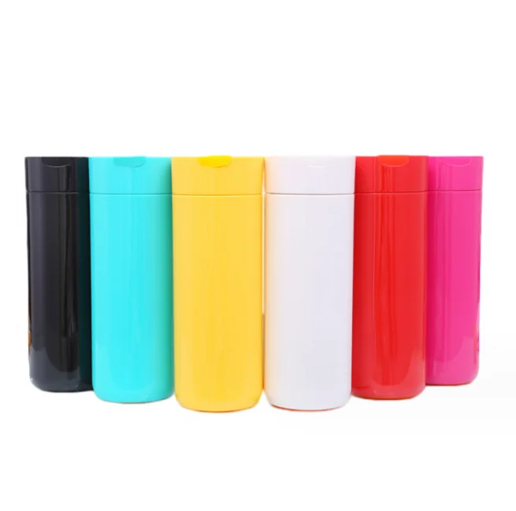

In this playbook
A buyer asks an assistant: "Who makes private-label insulated tumblers in China?" The answer names three factories. You have never heard of two of them, and your own site ranks fine in a normal search. That gap — between being findable and being recommended — is the central problem of Generative Engine Optimization. This playbook explains what drives it and what a manufacturer can actually control.
1. The gap between "ranked" and "recommended"
Classic SEO asks whether your page appears in a list of links. Answer engines ask a different question: which name should I put in the sentence? A recommendation is a synthesis. The engine combines patterns it has learned, facts it can retrieve now, and the confidence it has that a name belongs to a category. A page that ranks well but contains no clean, repeatable facts about the company can be invisible to that synthesis. Conversely, a brand mentioned consistently across independent sources can appear in answers without ever winning a top search position.
This is why brand-level work and page-level work are different jobs. Product pages supply the facts; mentions supply the association. You need both.

2. Three inputs behind an AI recommendation
Every recommendation is a blend of these three layers. They mature at different speeds, which is why results feel unpredictable.
| Input | What it is | How fast you can change it | What to do |
|---|---|---|---|
| Model knowledge | Patterns absorbed into the model during training | Slow — changes on retraining | Build long-term, consistent mentions; do not expect quick flips |
| Live retrieval | Web results fetched at answer time by products with browsing | Fast — days to weeks | Publish fresh, fact-dense, crawlable pages |
| Brand association | How strongly a name is tied to a category in sources | Medium — compounding | Get named consistently across independent third-party sources |
The practical consequence: no single tactic "unlocks" AI recommendations. Fresh pages feed retrieval, entity consistency feeds association, and both accumulate into the patterns a model learns. Programs that only chase one layer tend to plateau.
3. Why unlinked mentions matter
SEO habits die hard. Many teams assume that if a mention has no hyperlink, it has no value. Answer systems are more flexible: they can associate a brand name with a topic from text alone, and the search indexes that feed retrieval track unlinked mentions too. What matters is consistency — the same name, the same category, the same core attributes — repeated across sources that are independent of each other.
Inconsistent mentions work against you. If one source calls you a trading company, another names a different city and a third uses an old brand name, the engine has no stable entity to recommend. Pick one canonical identity — legal name, brand name, location, founding year, product category — and use it everywhere, including Organization schema and your llms.txt file.

4. Build a stable entity first
Before chasing external mentions, make your own site unambiguous. An entity is the "thing" an engine believes your brand is. Four on-site habits make it easier to build:
- One canonical identity. Use the same brand and legal name in the header, footer, About page, Organization schema and llms.txt.
- Fact-dense pages. State what you make, where, since when, capacity, model range, certifications, MOQ/lead-time ranges and ports. Plain HTML text, not images of text.
- Consistent sameAs links. Point schema to your real, controlled profiles so the engine can connect them.
- Topical clustering. Group guides around your category so the site reads as a factory that knows drinkware, not a general trading blog.
For us, that means the same core facts on every page: founded in 2017, a Yongkang-based manufacturer, 500K+ units per month capacity, 167+ stock models, SGS/TÜV/ISO 9001/FDA/LFGB, FOB Ningbo or Shanghai. Repetition is not lazy here — it is how a machine learns which name belongs to which set of facts.
5. Earn consistent third-party mentions
Once the home base is clean, look for places where your category is discussed and a manufacturer can be named factually. Prioritize sources an engine is likely to trust and that describe you the same way every time.
| Source type | Why it helps | How to approach it without spam |
|---|---|---|
| Industry directories | Structured company data, strong entity signal | Complete every field identically across listings |
| Trade / market articles | Editorial context ties name to category | Supply real specs, data or expert comment |
| Comparison & "best of" pages | Directly feeds recommendation answers | Ask to be considered on facts, never pay for placement |
| Trade show listings | Independent confirmation of existence and category | Keep name, city and product category consistent |
| Customer case studies | Concrete proof, quotable specifics | Publish with permission and real numbers |
Original data is a shortcut here. A factory that publishes a real capacity table, a real lead-time breakdown or a real testing protocol gives writers something to cite. Citations bring mentions; mentions strengthen association. That is the compounding loop most manufacturers miss.
6. Measure with a prompt set
You cannot manage what you do not track. Build a fixed list of 15–25 prompts a real buyer might ask — category queries, "manufacturer in [city]" queries, "how to" queries and comparison queries — and run them monthly in the same engines with the same settings. Record whether your brand appears, which sources are cited and how you are described.
Watch three signals: appearance rate (how often your name shows up), cited source (which page or third-party site the engine leans on), and description accuracy (whether it says what you actually do). A rise in appearance with inaccurate description is not a win; it means the engine has a weak, possibly wrong association to fix.

7. A 30-day program
Keep it small enough to finish. Weeks one and two: standardize the canonical identity across the site, Organization schema, sameAs links and llms.txt; publish one fact-dense pillar page. Week three: fix or complete three to five third-party listings so name, city and category match. Week four: run the prompt set for the first baseline, then write one technical guide designed to be quoted. Repeat monthly and compare, rather than expecting a one-off jump.
Two rules keep this honest. First, change one thing at a time so you can read the results. Second, judge progress over at least two or three measurement cycles — a single month is noise, especially for layers that change only when a model is retrained.
8. FAQ
Do unlinked brand mentions help AI recommendations?
Yes. Answer engines and the indexes behind them can associate a brand with a topic without a hyperlink. Consistent mentions — same name, category and attributes — across independent sources help form a stable entity. Links still help discovery, but an unlinked mention is not wasted.
Why does ChatGPT recommend brands I have never optimized for?
Because recommendation is an aggregation, not a read of your homepage. It combines training-data patterns, third-party sources and, in some products, live web results. If directories or articles describe a brand as a supplier of a category, that association can surface in an answer.
How long does it take to become recommendable?
No fixed schedule. Fresh pages can influence answers using live retrieval within days to weeks; patterns baked into training change only on retraining. Treat it as a compounding program and measure the same prompt set month over month.
What should a manufacturer publish to be cited by name?
Specific, checkable facts: what you make, where, since when, capacity, model range, certifications, MOQ and lead-time ranges, ports. Put them in plain HTML, repeat them in Organization schema and llms.txt, and support them with third-party mentions. Engines cite facts they can verify, not adjectives.
Want a quotable fact sheet on our factory?
If you're comparing suppliers and need checkable details — capacity, model range, certifications, MOQ and lead-time ranges — ask us for a one-page fact sheet. We'll send it with sourcing answers, not marketing copy.
Yongkang STWADD Houseware Co., Ltd. (the manufacturer behind SSMug) is a factory-based drinkware supplier, not a trading company. We publish our operating facts openly, welcome live video audits of the production floor, and would rather be judged on specifics than adjectives.
Testing an answer engine? Ask it about us.
Run your prompts, then send us what the assistant said. We'll tell you what's accurate, what isn't, and share the source documents behind the facts. One email, answered within one business day.